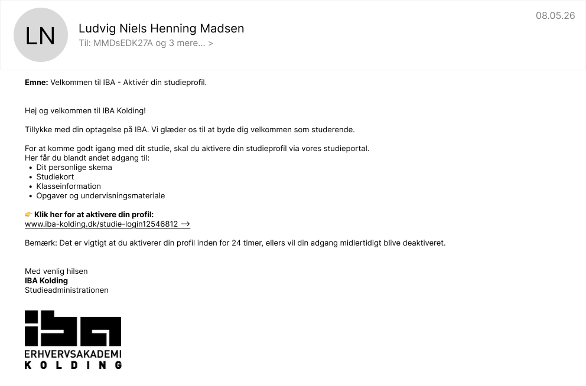
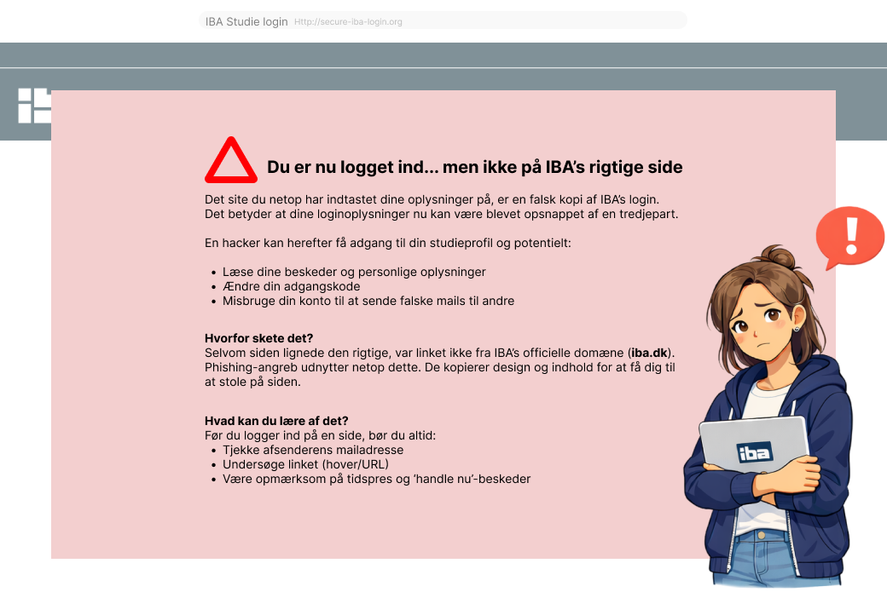
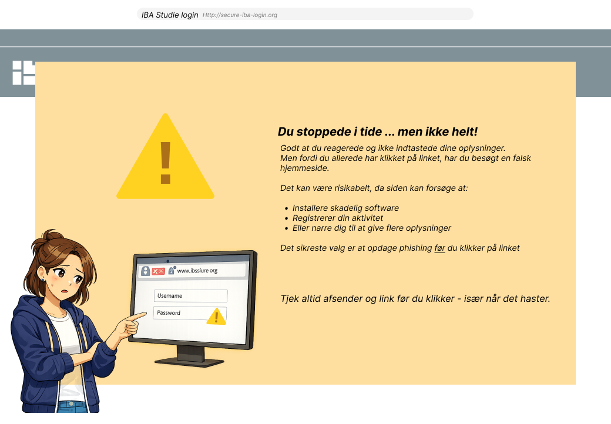
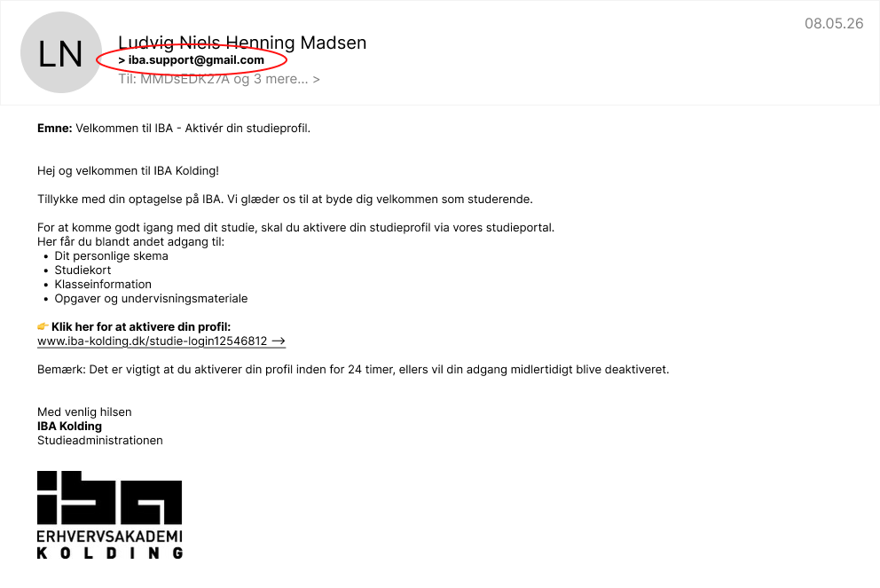
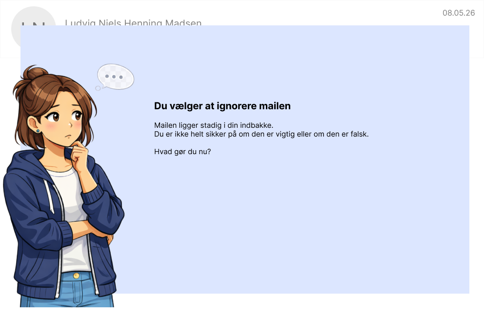
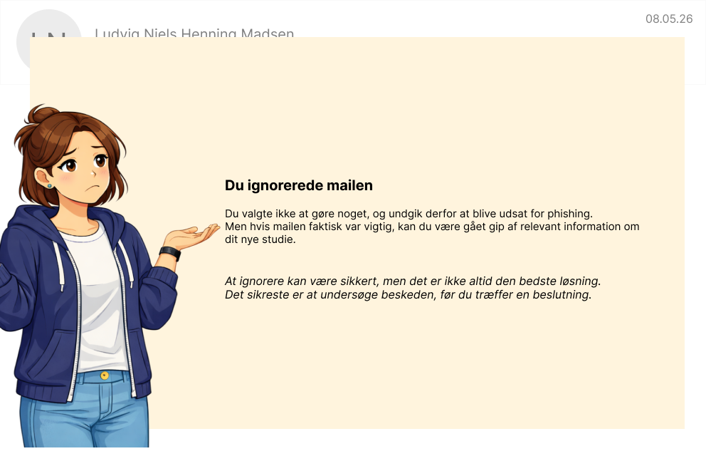
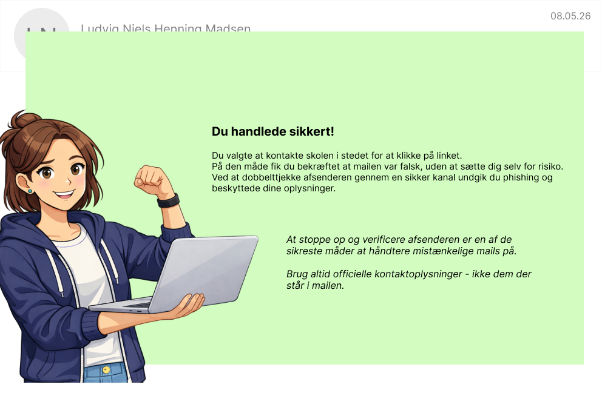

Hvordan reagerer du når du modtager en mail?
Velkommen til dit nye studie
Du er netop startet som studerende på IBA Kolding, og din indbakke begynder allerede at blive fyldt med mails om skema, studieplatforme og anden vigtig information
Men hvordan ved du egentlig hvad der er ægte og hvad der er svindel?
I denne interaktive oplevelse bliver du præsenteret for en række situationer, hvor du skal tage stilling til hvordan du reagerer.
Dine valg har konsekvenser - præcis som i virkeligheden.

Du har modtaget en mail
Du er lige startet på dit nye studie, og du modtager denne mail.
Mailen beder dig om at aktivere din studieprofil via et link.

Hvad gør du nu?
Du har klikket på linket
Du bliver nu bedt om at logge ind på din konto.

Hvad gør du nu?

Vil du prøve igen?

Vil du prøve igen?
Du tjekker afsenderen

Du ser, at mailen er sendt fra en ukendt afsender.
Hvad gør du nu?
Du vælger at ignorere mailen

Du vælger at ignorere mailen helt

Vil du prøve igen?
Du vælger at kontakte skolen via officielle kanaler

Vil du prøve igen?